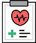

증명서 발급
필요한 증명서의 발급 절차를 안내합니다
제증명 서류의 종류와 준비물, 발급 방법을
방문 전에 미리 확인해 주세요.
원활한 서류 발급을 위해 신청 전 필요한 구비서류와 유의사항을 확인해 주세요.
외래환자 서류 발급 절차

원무과 접수- 주치의 작성
- 서류 발급 및 수납
입원환자 서류 발급 절차
병동 간호사실 신청
진료기록 사본 발급 시
구비서류 안내
| 신청인 | 구비서류 | 비고 |
|---|---|---|
| 환자 본인 | 본인임을 확인할 수 있는 신분증 | 신분증을 제시해 주세요. |
| 환자가 지정한 대리인 | 대리인 신분증 사본, 환자 신분증 사본, 환자 자필 서명 동의서 및 위임장 | 미성년자 등은 추가 서류가 필요할 수 있습니다. |
진료기록 열람 및 사본발급
위임장/동의서 양식
국가법령정보센터의 공식 서식이 새 창에서 열립니다. 진단서 등 서류 종류와 신청인에 따라 준비물이 다를 수 있으니 방문 전 031-452-3000으로 확인해 주세요.